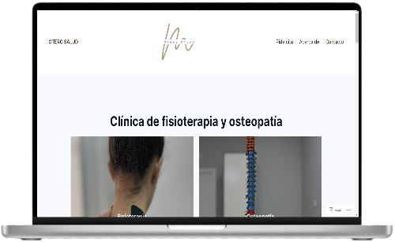

Soy Adrián Blanco ¡Hola! soy un estudiante apasionado de desarrollo front-end. En mi portafolio, encontrarás mi dedicación por crear experiencias web atractivas y funcionales. ¡Descubre cómo combino creatividad y habilidades técnicas para dar vida a proyectos web excepcionales!

¡Hola! SoyAdrián, un apasionado estudiante de Desarrollo de Aplicaciones Web (DAW) en el Instituto de Puig Adam. Actualmente, me encuentro inmerso en el fascinante mundo de la creación web, ansioso por aprender y crecer en esta emocionante disciplina.
Mi viaje en el desarrollo web está marcado por la curiosidad y la voluntad de superación. Aunque aún estoy en las etapas iniciales de mi carrera, cada línea de código es una oportunidad para explorar, aprender y mejorar. Estoy comprometido con el proceso de convertirme en un desarrollador competente y creativo.
Mi enfoque de aprendizaje se basa en la resolución de problemas y la práctica constante. Estoy emocionado por la oportunidad de aplicar mis conocimientos en proyectos del mundo real y enfrentarme a nuevos desafíos que impulsen mi habilidad para crear soluciones web innovadoras.
Lo que me falta en experiencia, lo compensa mi entusiasmo por cada proyecto. Mi objetivo es contribuir al mundo digital con aplicaciones web que no solo sean funcionales, sino también intuitivas y atractivas. Estoy abierto a colaboraciones y a sumergirme en proyectos que me permitan expandir mis habilidades y aportar valor.
Mis Proyectos

oterosalud